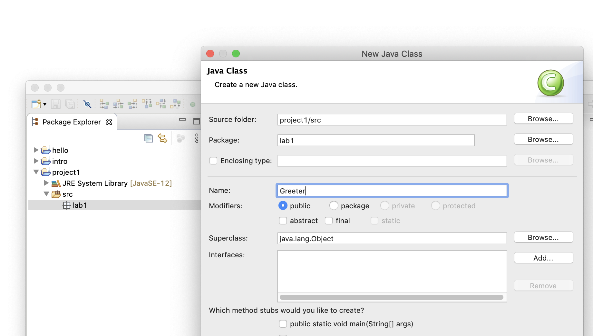

Creating a Class
Java code is normally organized into packages. For this lab, create a package called lab1 for your work:
- In Package Explorer, right-click on the
srcdirectory in your new project, select New, and choose Package. - Name the new package "
lab1". In order for us to be able to find your work, make sure you get the spelling and case correct.
Now, we will create a Java class in the lab1 package nested under the project1 project.
- Right-click on the
lab1node in the Package Explorer and go to New -> Class. - At the New Class dialog,
- Check that the package name is lab1
- Enter the name "Greeter" for the class name, and click Finish.

Note that Eclipse automatically creates a tabbed editor pane with a skeleton of the Greeter class already entered.